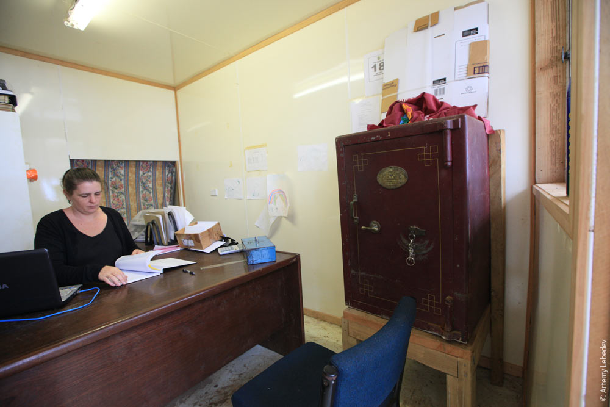
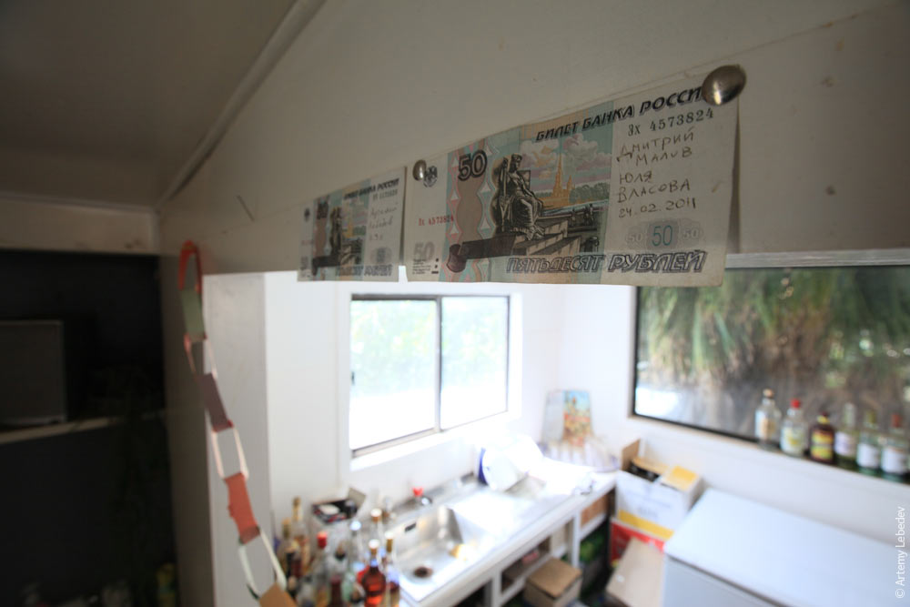
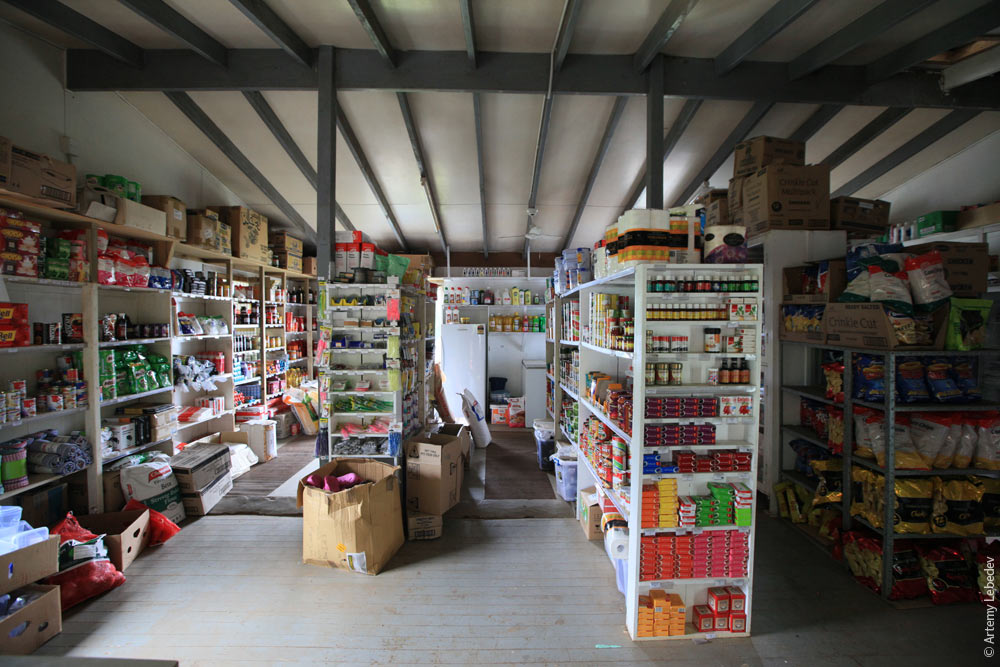
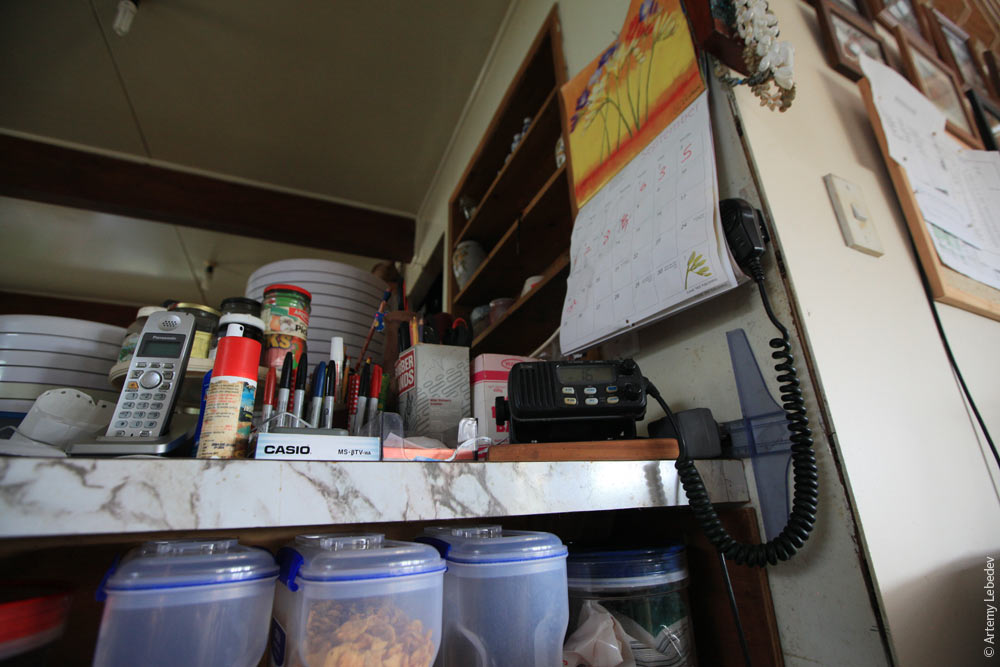
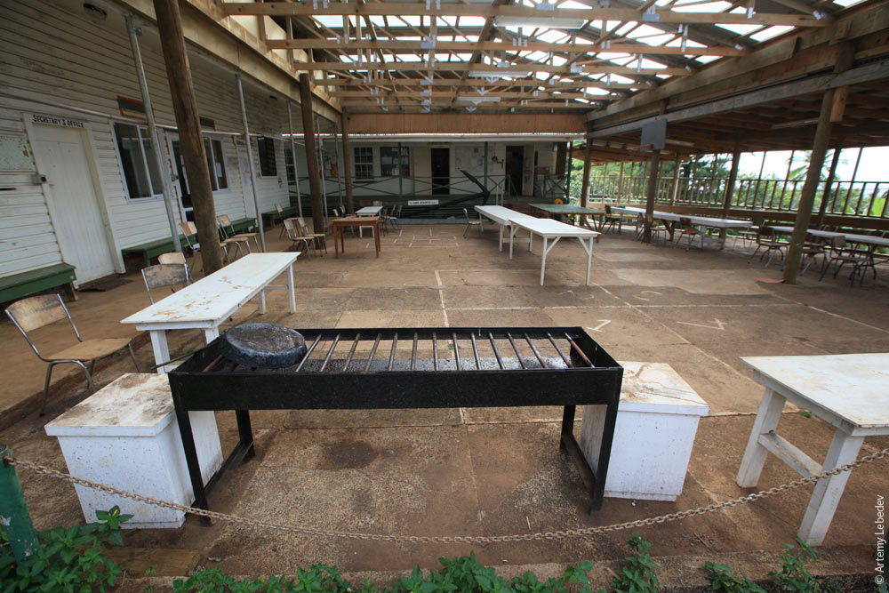
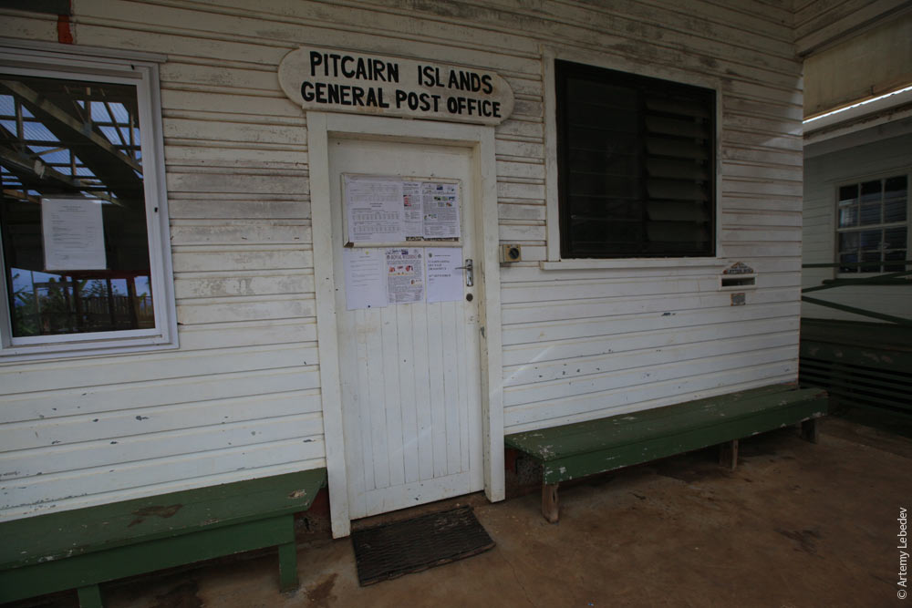

Our Situation
he Pitcairn government's attempts to attract migrants have been unsuccessful. Since 2013, some 700 make inquiries each year, but so far, not a single formal settlement application has been received. The new migrants are prohibited from taking local jobs or claiming benefits for a certain length of time, even those with children.The migrants are expected to have at least NZ$ 30 000 per person in savings and are expected to build their own house at average cost of NZ$ 140 000.It is also possible to bring the off-island builders at the additional cost between NZ$ 23 000 and NZ$ 28 000.
The average annual cost of living on the island is NZ$ 9464. There is, however, no assurance of the migrant's right to remain on Pitcairn; after their first two years, the council must review and reapprove the migrant's status. The migrants are also required to take part in the unpaid public work to keep the island in order: maintain the island's numerous roads and paths, build roads, navigate the island longboats, clean public toilets etc. There are also restrictions on bringing children under the age of 16 to the island.
|  |  |  |
|---|---|---|
|  |  |  |
New Life
The islands have suffered a substantial population decline since 1940, and the viability of the island's community is in doubt (see § Potential extinction, below). In recent years, the government has been trying to attract new migrants. However, these initiatives have not been effective. As of 2012, just two children had been born on Pitcairn in the 21 years prior. In 2005, Shirley and Simon Young became the first married outsider couple in history to obtain citizenship on Pitcairn.